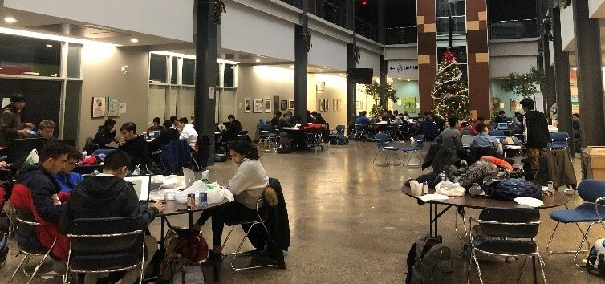

Hack the Hammer - Logisitics Director
A 36-hour hackathon hosted by students of Westdale Secondary School in Hamilton is an event where high school students across the GTHA come together to learn... how to code! As the logistics director, I helped organize the structure of the event as well as led a group of volunteers in runnning various workshops, assisting participants on questions, etc.
I got the oppurtunity to judge amazing projects (I could learn a lot from them!), and introduce guest speakers and sponsers to the venue. In the end, it was a great event with around 250 students that either learned or improved skills that help them get a better understanding of what the technology indutry is all about!